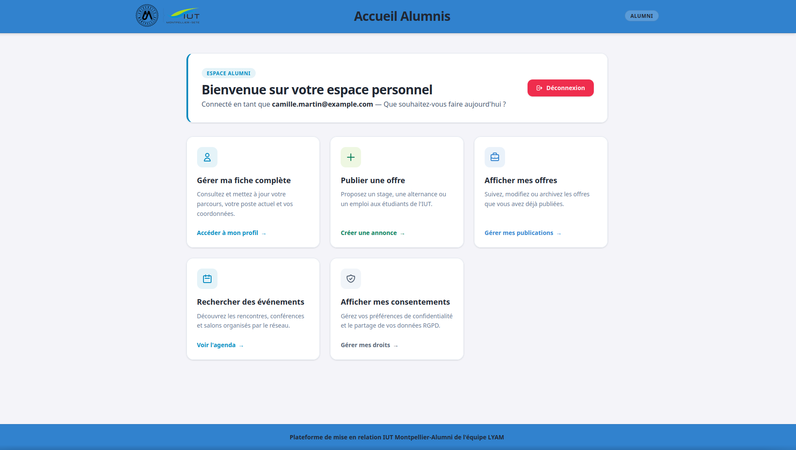

Plateforme Alumni — IUT de Montpellier
En cours (SAÉ)Application web multi-rôles développée en équipe : architecture PHP MVC avec PDO, authentification LDAP, gestion des profils anciens étudiants, filtrage d'événements et publication d'offres de stages et d'alternances.